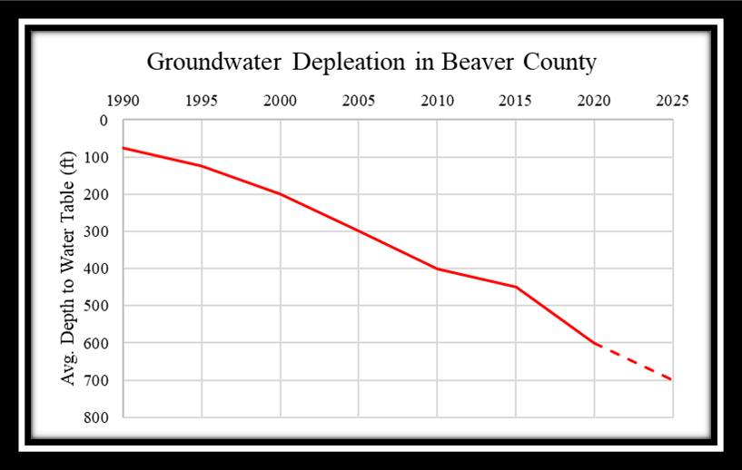

BEAVER COUNTY WATER IN DANGER
Decades of over-pumping is now catching up to the people and businesses in and around Beaver County.The graph on below shows the declining groundwater levels over the past 30 years. Local officials worry having enough ground water available for agricultural practices and drinking water for communities. State officials warn that heavy sanctions on groundwater use may be coming unless the community acts quickly to manage groundwater supplies
